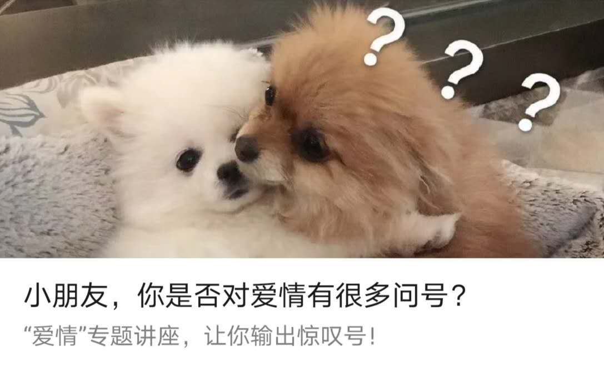
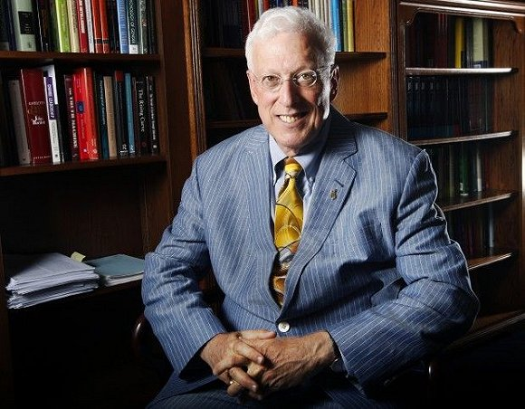
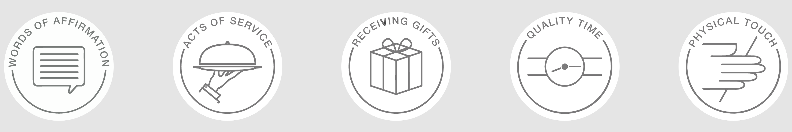

关于爱情的心理讲座

主讲人是来自厦门大学心理咨询中心专职咨询师----江珊老师。
讲座介绍
爱是一种需要，也是一种缺乏。
爱情是一个恒久的话题，被爱的人永远是宇宙中那颗最特别的星。对我们大学生而言，爱情不仅具有巨大的吸引力，还充满很多疑问。
- 爱情是什么？
- 坠入情网有哪些小陷阱？
- 如何维护亲密关系？
本次讲座将为你揭开关于爱情的神秘面纱，让你收获满满的理论知识，从而为实践打下坚实的基础！
「無論如何我要留一個形象給你，於是我頭戴各色野花跑進你的夢中，我的躊躇鋪成你清晨起來不曾留意的那條小道，很自然地你順著它走下去，寫些激動人心的故事。」
——海子
下面进入正题了哦 :)
爱情是什么？
青春期的我们总是会遇到这样的问题：
- 爱情是一种怎样的感觉？
- 我要不要跟ta在一起？我该和ta分手吗？
- 怎样才能使得爱情长治久安？
如果想解答这三个问题，我们需要先弄明白爱情是怎么一回事。
从古到今，爱情一直是文学创造的主要话题。
爱是欲求，是冲动，是恒久的失衡。
如饥似渴，不能熄灭。
——柏拉图
《第一次》——光良
第一次吻你深深的酒窝
想要清醒却冲昏了头
这两首诗歌都代表着爱情中的欲望与冲动。
《关雎》——诗歌
求之不得，寤寐思服
悠哉游哉，辗转反侧
《爱情》——莫文蔚
若不是因为爱着你
怎么会夜深还没睡意
每个念头都关于你
我想你 想你 好想你
《七里香》——周杰伦
雨下整夜，我的爱溢出就像雨水
……你出现在我诗的每一页……
我接着写，把永远的爱你写进诗的结尾
你是我唯一想要的了解
这三首描述的爱情是一种全身心吸引。
《夜雨寄北》——李商隐
何当共剪西窗烛，却话巴山夜雨时
《稳稳的幸福》——陈奕迅
我要稳稳的幸福
能用生命做长度
每次伸入怀中
有你的温度
《喜欢你》——陈洁仪
我喜欢你爱我的心
轻触我每根手指感应
我知道
它在诉说着你承诺言语
这些诗歌里面描述的不是炽热的爱情，而是一种温暖的，踏实的感觉。
同样是爱情，这些诗歌对爱情的描述是不一样的。为什么呢？是因为他们写的爱情的阶段是不一样的。
爱情三阶段理论
这个理论的是由罗格斯大学Helen Fisher教授提出来，她研究亲密关系长达30多年，著有《我们为何相爱》、《爱情的起源》等。
外在表现
一个亲密关系的发展是有三个阶段的：
- Lust 好色 / 怦然心动
- 对另一个产生亲近、接触以致性的欲望
- 兴趣、冲动、生理诉求
- Attraction 吸引 / 朝思暮想
- 被另一个人深深吸引，占据注意力，经常会想起对方
- 强烈的专注、获得的动力；欢欣、痴迷
- Attachment 依恋 / 情有独钟
- 愿意为长期的亲密关系付出努力，包括忠诚，包容等
- 平静、安全感
生理机制
-
Lust 好色 / 怦然心动
- 性激素：睾酮、雌激素
- “欲望激素”，原始的性冲动
- 性激素：睾酮、雌激素
-
Attraction 吸引 / 朝思暮想
- 多巴胺
- “上瘾激素” ，它传递兴奋及开心的信息。另外，多巴胺也与各种上瘾行为有关。
- 肾上腺素
- “心跳激素”，引起心跳和血流量加速
- 五羟色胺
- “快乐激素”，产生愉悦、调节压力
- 多巴胺
-
Attachment 依恋 / 情有独钟
- 催产素
- “母爱激素”，曾强同理心、更乐于给予支持、更自在的表达情感、沟通及肢体接触
- （垂体后叶）加压素
- “忠贞激素”，促进男性的性行为和父亲行为及自利性的社会决策；促进女性亲和行为
- 内啡肽
- “镇定激素”，可以镇痛，让人感到镇静和愉悦。（可以通过慢跑产生哦）
- 催产素
-
性激素：原始的性冲动
那么通过了解了爱情的三阶段理论就能回答提出的两个问题了
爱情是一种怎样的感觉？
官方答案：爱情是一种复杂的情感，它包含强烈的动机和排他性。在不同的阶段，陷入爱情中的个体会有不同的情绪体验，这与我们体内的多种激素作用相关。爱情中的感觉变化不代表爱情消失了，而可能是进入了不同的阶段。
非官方答案：
A1：爱情让人拥有快乐，也会带来折磨。
A2：爱就像 蓝天白云晴空万里 突然暴风雨 也许多年 也许瞬间 你自有答案
爱情三要素
想要解答第二个问题，我们就需要先去了解一下爱情的三要素。该理论是由Robert Sternberg，耶鲁大学教授提出来的。他的研究领域包括爱情和人际关系、创造性等；著有《爱情心理学》、《亲密关系中的满足感》等。

爱情的三元素理论：激情，亲密，承诺。

-
激情
- 情绪上的着迷，与对方相处时会有兴奋、愉快的感觉
-
亲密
- 双方感觉亲近、温馨。了解、理解、支持对方，会深层次的感情分享和坦诚的沟通。
-
承诺
- 能够确定是否爱对方，能够做出维护双方关系的承诺，包括对爱情的忠诚，责任心。
三元素虽然在爱情中缺一不可，但是在爱情的不同阶段中比重不同。
对比两个理论可以发现：爱情的三元素和爱情的三阶段几乎是一一对应的，也就是说：
- 在第一阶段“好色 / 怦然心动”，激情占的比重更高
- 在第二阶段“吸引 / 朝思暮想”，亲密占的比重更高
- 在第三阶段“依恋 / 情有独钟”，承诺占的比重更高
有趣的弹幕：“听说对象包分配？你们分，我不配。”
哈哈哈🤣🤣🤣
理想的爱情是什么样？
这个问题也可以换成最开始更加通俗的说法：我要不要跟ta在一起？我该和ta分手吗？
官方答案：理想的爱情应同时包含激情、亲密、承诺三个元素，缺一不可。尽管每个人对不同的元素重视程度不一样、尽管不同爱情阶段中每个成分的“浓度”不同，但这并不代表某种元素是可有可无的。
爱情中的“鸡同鸭讲”
就像讲不同语言的人之间难以沟通一样，如果我们听不懂对方**“爱的语言”**，也就无法接受对方传递来的“爱的信息”，更无谈回应。
别人男朋友 VS “我的”的男朋友
| 别人男朋友 | VS. | “我”的男朋友 |
|---|---|---|
| 基于另一半关注，能发现对方的变化并给予赞赏 | 不关心不关注对方 | |
| 不吝于用溢美之词向亲友介绍对方 | 懒得介绍自己的女友 | |
| 了解对方喜好，精心为对方挑选礼物 | 借送礼物给对方之名买自己喜欢的东西 | |
| 有仪式感地计划纪念日/节日 | 不在意特殊的日子 |
五种爱的"语言"

婚恋咨询师查普曼博士总结出人们五种爱的语言：
-
肯定的言辞
- 称赞
- 真诚地欣赏对方
- 感激对方对你与家庭的付出、奉献，不吝与表达
- 鼓励
- 鼓励可以表达我们对对方的信任及能力 的肯定，鼓励需要同理心：对对方而言，什么是重要的？注意鼓励不是施压：给予自信而非压力
- 谦和
- 提出要求，而非要求
- 注意说话的语气语调，同一句话，用不同的语气会给人不同的感受
- 称赞
-
精心的时刻
- 集中注意力
- 尽心的时刻不只是“两人在统一空间”，而是两人同心做一件事情或者给予对方全部的注意力。
- 精心的活动
- 重点不是做什么，而是增加两个人在一起的经历；可以包括任何两个人或者个人感兴趣的事情
- 精心的对话
- 保持目光的接触
- 观察对方的肢体语言、面部表情，倾听对方的情绪
- 不要太快地打断对方以及说教
- 集中注意力
-
礼物
- 礼物的意义
- 礼物并非形式主义
- 礼物本身是思念地象征，是否值钱不是重点，重要的是我们看到物品时自然地想到了对方
- 礼物不一定是买的
- 找到的、自制的……
- 了解对方地喜好、品味
- 礼物的意义
-
服务的行动
- 对方意愿
- 做对方希望你完成地事——你为ta服务是希望ta开心，而不是借此以彰显自己能干或高人一等。
- 积极主动
- 服务需要付出时间、精力、努力，中的那是自己主动希望为对方服务，而不是“被逼无奈”去做。
- 对方意愿
-
身体的接触
- 牵手、亲吻、拥抱
- 抚触、性、……
每个人都不止会使用一种爱语，但不是每种爱语都是“主要爱语”。 我们可以通过在线小测试来测一下你的主要爱语。
如何才能使得爱情长治久安？
官方答案：亲密关系能否长久持续与双方是否能顺畅、真诚、深层地沟通高度相关。恋爱中地双方若能学会说出对方的爱语，就可以更好地表达接受对方地爱，提高双方在爱情中地满意度和幸福感。
坠入情网的小陷阱
吊桥效应
- 当一个人提心吊胆的过吊桥的时候，会不由自主心跳加快。如果这个时候遇见一个异性，那么他会错把这种情景引起的心跳加快理解为对方使自己心动，才产生的生理反应，故而对对方滋生出爱情的情愫。
被偏爱的都有恃无恐
-
男性对比较多的人追逐的女性敬而远之，而女性相反，女性会喜欢被更多女生喜欢的男生。（如果你想被妹子吸引到的话，要体现出自己很受女生欢迎，如果男生被很多女生追逐的时候，说明男性的社会资源更多，地位更高）。
-
雌性择偶时会非常在意其他雌性的选择，即倾向于选择已被验过货的雄性，也就是有主的名花更香。越是优秀的雌性，越能引起择偶模仿效应。
得不到的永远在放纵
- 蔡戈尼克效应（Zeigarnik）由西方心理学家蔡戈尼克提出，指的是人们对尚未处理完的事情比已处理完的事情印象更加深刻。（能解释为什么谈着这一段恋情的时候为什么会想着前一任）。
罗密欧与朱丽叶效应
- 心理学家德里斯科尔等做了一项研究，对91对已婚夫妇和相恋已达8个月以上的49对恋人为对象，考察夫妇、恋人的彼此相爱程度与他们父母干涉程度之间的关系。实验结果表明：在一定范围内，父母干涉程度越高，情人之间的相爱也越深。
快速脱单的技巧
答：千层套路不如真诚铺路。技巧虽好，做自己最好。

答疑
异地恋是否容易分手？
可测测试一下爱的五种语言看他是哪种倾向的人。如果你们的需求是身体的接触和精心的时刻，那算了，分了吧；如果是肯定的言辞或者礼物，我们可以通过另外的方式去弥补这种异地恋的不足。
女追男，怎么追？
一定要合适，前面有说过爱的五种语言，要看他看重五种特质中的哪一个，如果他看重的特质不是你具备的，但是如果不适合你，建议不要尝试。
写在最后
很多时候一开始我们喜欢的都是一类人——某一类有什么特质的人，那么这个人什么时候变成了非他不可呢？是因为当两人有了很多共同的故事，当我们回忆起来我们生命很多很宝贵的时刻都有对方参与的时候，两个人的经历和人生互相交织到一起的时候，这个时候对方才成为了不可替代的另一位。
在此之前你喜欢的都是一类人，这一类人是有很多选择的，我们不必去为了看起来好像是很好的一棵树而去改变自己，这就是本末倒置了，我们应该去找到让自己舒服的鞋子，而不是拼命的改变自己，为了穿上看上去很美丽但是不合脚的鞋子，没有必要。
很庆幸，小丰同学与条条同学度过了Lust与Attraction时期，现在我俩处于Attachment时期啦。不过想想当年我们俩19年6月的那一次争吵就有点后怕，现在看来那一次争吵使得我俩的关系正式从Attraction转到了Attachment。如果你想问我们当时吵了什么，具体我也记不清了（毕竟坏事小丰同学就选择性忘记啦），但是最后的结论是：我们确定了属于我们俩的相处方式。不是每天早安，不是每天语音，也不是每天视频，而是想到ta就聊聊天——一种更加自然也能更加持久的相处方式。她不是那种话多的女孩子，我呢适中，慢慢我的话也少了，但是我与她的话越来越多了。互相知道对方的存在，互相依恋，多了承诺和进取，少了激情，毕竟我俩异地的时间比较多嘛。当然如果气氛到位亲密自然不会少。嘿嘿。😘😘
额外阅读
鼓励读者去看一看依恋理论，包括：安全型依恋、回避型依恋、焦虑型依恋、矛盾型依恋等。每个不同依恋类型的人，他在爱情里面的表现是不一样的。比如：焦虑依恋，很喜欢去查岗，她可能忍受不了跟伴侣长时间的分离，会很想知道对方此时此刻在做一些什么，以及很担心对方会不会不喜欢自己、会不会出轨等。（母胎单身很多都是回避型依恋）。推荐一本书 《关系的重建》。